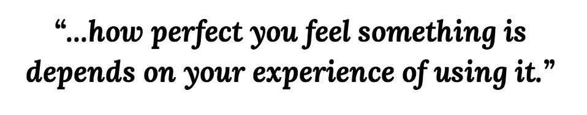

DETAILED DESIGN & CAD
Click on a subsection to know more Final design | CAD
The Perfect Teapot
Below are the sketches of my 'final' idea: A teapot that brews two types of tea separately while avoids the unnecessary bulk of a two-spouted teapot. Satisfies both those who like mixing tea, who enjoy tea when shared with other people (who may like another type of tea), being compatible too when user brews tea for themselves.
*insert pictures*
3D MODELLING: CATIA
*insert more info + pictures*
CATIA was harder to install than to use. Once I installed on my Mac (I used a virtual machine, 'VMWare'), within two days I felt quite confident with the way it works. Although at first we had a love-hate relationship, after hours of learning how it functions CATIA and I ended up beging friends (I hereby claim that I can make a double-spout, double-chamber teapot on as stand in less than fifteen minutes). I got into it quite a lot and I am currently working on a 3D model of the UCL portico to print off for a crowdfunded project. Being able to 3D model in CATIA has changed a little bit my way of approaching design. I spent a lot of time during the early stages of my project thinking about what the best design would be. Just like it is intuitive to draw ideas on a piece of paper to visualise them, it has now become intuitive to try and 3D two or three versions of the Perfect Teapot and see which one works best. Having access to a 3D printer and knowing how to use CATIA, 3Ds max or Google Sketchup among other programs for 3D modelling, means bridging significantly the gap between concept and experience.

3D Printed Product


This is the 3D printed version of my previous prototype. It differs from my final design in that the updated version is not a rocking teapot, and instead has been split into two distinct half-teapots in order to abolish the issue that arises from having a two spouted teapot design.
As described in the research section, I summarised good design as one that captures the real value of the object and makes it core to the experience of using it. To put it simple:
And this is precisely why I tried avoiding the bulkiness, uncommon concept of a two-spouted teapot, while still offering a 'two-spouted experience'.
I loved the idea of splitting the teapot as soon as it came to me because it felt like I was able to keep the common experience of pouring tea from a one-spouted teapot, and yet it also embodied the sharing experience within the social aspect of tea.
Throughout the past, tea has become a focal point for social gatherings in several parts of the world with completely different cultures, simultaneously. Chinese and Japanese tea ceremonies, tea as a classist tool in 17th century England, and tea as the main activity in social gatherings in Arab culture are three examples of many sources of evidence for the social, universal essence of tea. It is this core, social element of tea, that raises the importance of the role of the teapot. Teapots allow tea to be what it is; throughout the past is has represented one’s class; one’s manners, hospitality and caring for others; and even one’s spirituality, which will be explored in more detail in this report. Different cultures present very different types of teapots, thereby confirming the major role of a teapot in representing the value system of a society. Alike tea, throughout history and in many different cultures, teapots have been and still are a core element in social interactions. [Extract of final report]
Because sharing tea is such a key factor of tea culture in many different communities, I've been determined throughout my research to create a teapot that enhances the idea of tea sharing. I've decided to take the approach of expanding the concept of choice over tea; allowing different teas to be bred among visitors or a group of people seemed like a viable market gap to be addressed.
*insert picture of final design*